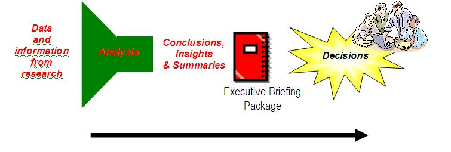

| Guideline: Developing the Executive Briefing Package |
 |
|
| Related Elements |
|---|
The Executive Briefing Package is used to convert basic facts and data into a more valueable asset. The process to do so moves through five stages of analysis (See Figure 1), each building upon the previous. These stages are (1) facts & data, (2) information, (3) intelligence, (4) knowledge, and (5) wisdom.
Analysis begins with the collection of facts and data. By itself, facts and data are somewhat useless. For example, if you were told that the gross margin on a specific product was 6%, without any other insight, this has limited value. However when this data is combined other facts, a context from which to view this data takes form. For example, if the gross margin of this product was 8% during the previous quarter, suddenly we have a reference point of analysis, product margin has declined. We now have information. The next question is probably why has gross margin dropped. Could it have been due to increased cost of raw material, or perhaps a drop in average sales price on a per unit basis. We develop some assumptions based on what we can infer from the operating environment and by doing so move to the next level of analysis, intelligence. With additional effort we can take the collected intelligence and begin to prove or disprove our assumptions and hypotheses. For example, we open our weekly store receivables file and find that the average retail price of this product has trended slightly downward over the past 4 weeks. One or our hypotheses has been proven and in doing so, we have increased the level of certainty of this analysis and created Intelligence. Now we move into the final analysis. We understand the current situation but now we question, what should be done. Perhaps through research we determine that the recommended course of action is to lower supply on the market, which will drive upward movement in unit price in the presence of level demand. This example is used to stress the importance of moving beyond providing just facts, data and information. The research conducted for the Executive Briefing Package should be taken from low-level data to as high a level as possible within the time and scope of the engagement. This will enable the executive team to quickly understand the external and internal factors affecting the firm and make the approproaiate decsions as illustrated in Figure 2. 
An Executive Briefing Package is usually prepared for engagement kickoff meetings, workshops, or interviews – any engagement situation where clients need “refined” input to make decisions.
|
| © Copyright IBM Corp. 1987, 2012 All Rights Reserved Property of IBM These materials are intended only for use as part of an IBM engagement |